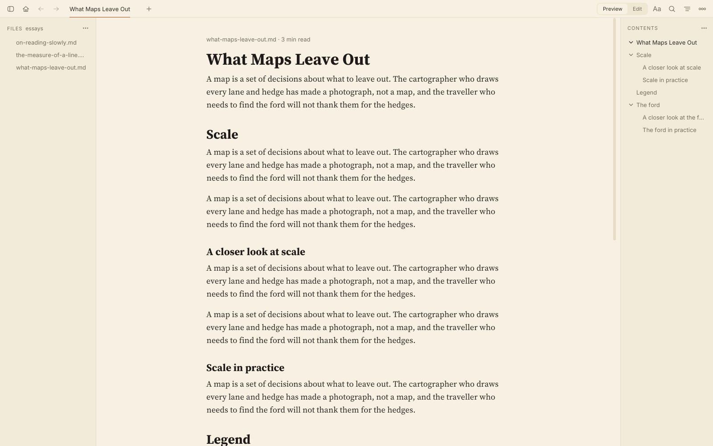
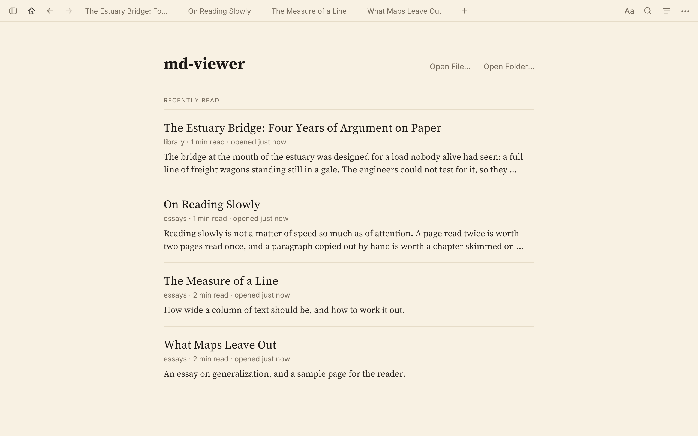
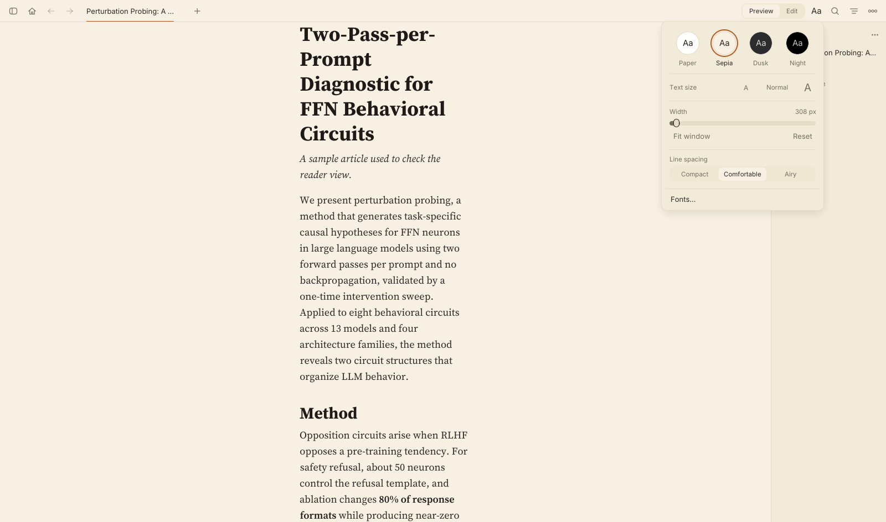

One sheet of paper, a centered column of serif text, and nothing else.
md-viewer is a desktop reader for Markdown. It opens a .md file and shows it the way a good read-later app shows an article. It renders LaTeX math, Mermaid diagrams, tables and syntax-highlighted code, and reloads the page when the file changes on disk.
- Text face
- Source Serif 4, bundled
- Code face
- Source Code Pro, bundled
- Line height
- 1.6; also 1.45 and 1.8
- Column
- 280 px to the whole window
- Text sizes
- Five, and 50% to 300% zoom
- Themes
- Paper, Sepia, Dusk, Night
- Contrast
- 7:1 or better for body text
- Built with
- Rust and egui
Faces
The weights the app bundlesA map is a set of decisions about what to leave out.
A map is a set of decisions about what to leave out.
A map is a set of decisions about what to leave out.
A map is a set of decisions about what to leave out.
md-viewer notes.md --no-watch
Four themes
Ctrl+D steps through themEach theme is a single palette that every part of the window draws from. The same paragraph, four times, in each theme's real colors.
Paper
LightIt opens a .md file and shows it the way a good read-later app shows an article: one sheet of paper, a centered column of serif text, and nothing else on screen until you ask for it.
- Page#FDFDFB
- Text#1F1F1F
- Link#1A5FB4
- Accent#1A5FB4
Sepia
DefaultIt opens a .md file and shows it the way a good read-later app shows an article: one sheet of paper, a centered column of serif text, and nothing else on screen until you ask for it.
- Page#F8F1E3
- Text#2B2622
- Link#9A4A1F
- Accent#B25E28
Dusk
Dim roomIt opens a .md file and shows it the way a good read-later app shows an article: one sheet of paper, a centered column of serif text, and nothing else on screen until you ask for it.
- Page#2C2C2E
- Text#DAD7D0
- Link#9DC1F5
- Accent#E0A458
Night
The darkIt opens a .md file and shows it the way a good read-later app shows an article: one sheet of paper, a centered column of serif text, and nothing else on screen until you ask for it.
- Page#000000
- Text#C8C6C1
- Link#8AB0EE
- Accent#D09A52
Measure
Drawn against a 1200 px windowDrag either edge of the text and the column follows. It stays centered, and a small pill shows the width while you drag. Double-click an edge to go back to the default.
Rendering
Plates 1 to 4 are drawn in HTML and SVG, not by the appFormulas and diagrams are drawn as ink on the page in the theme's own colors, so they never sit in a white box. Tables have hairlines between rows and honor the alignment the Markdown asks for.
| Theme | Page | Text | Accent |
|---|---|---|---|
| Paper | #FDFDFB | #1F1F1F | #1A5FB4 |
| Sepia | #F8F1E3 | #2B2622 | #B25E28 |
| Dusk | #2C2C2E | #DAD7D0 | #E0A458 |
| Night | #000000 | #C8C6C1 | #D09A52 |
/// The theme after this one. const fn next(self) -> Self { match self { Self::Paper => Self::Sepia, Self::Sepia => Self::Dusk, Self::Dusk => Self::Night, Self::Night => Self::Paper, } }
Workspace
Figures 5 to 7 are the app itselfTabs
In the top row, each named by its document's first heading, with back and forward history in each. The session is remembered.
Sidebars
A file list on the left and a table of contents on the right. The contents list marks the heading you are reading.
Live reload
The page reloads when the file changes on disk. F5 turns it off and on, and --no-watch opens without it.



Questions
Is it an editor?
No. There is an edit mode (Ctrl+E) that shows the source as plain text and saves with Ctrl+S. It is for the typo you just noticed.
Does it run on a Mac?
CI type-checks the code for macOS and Windows. The reader has not been run on either. Linux on X11 is built and run for every change.
Is there a package?
Not of this reader. Build it from source. The md-viewer on crates.io, the Snap Store and the AUR is the upstream project.
Can I use my own font?
Yes. Other presets and any installed font family are under Aa, then Fonts…
Does it follow the file while I write?
Yes. Live reload is on unless you turn it off.
How long a document can it take?
Tens of thousands of lines scroll less smoothly. The README lists this under known limits, with the others.
Install
From source$ git clone https://github.com/PhillipChaffee/md-viewer $ cd md-viewer $ cargo build --release $ make install
You need a Rust toolchain. The version is pinned in rust-toolchain.toml, and rustup installs it on the first build. make install copies the binary to ~/.local/bin.
The system packages for Debian, Ubuntu and Arch Linux are in the README. The source is at github.com/PhillipChaffee/md-viewer, under the MIT licence.